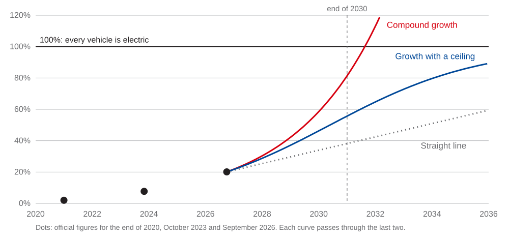
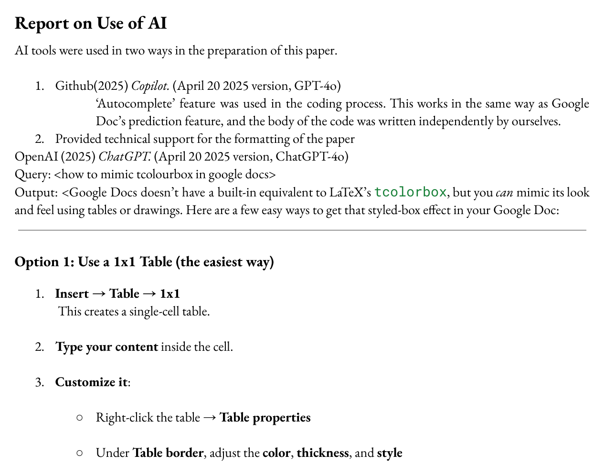

Session 5
A real problem, and a new teammate
Today has two halves. First, a Mini Competition: forty minutes on a problem of the kind set in the Hong Kong competition, with no help from anyone. Then you read an answer to the same problem written by AI, and AI joins your team under a rule.
1Mini Competition
Rules. Forty minutes. No AI, no searching, and no help from me: I will not answer questions about the problem.
First, the Team lead writes a time plan in the first three minutes: who does what, and by when. Leave eight minutes to write.
Hand in one page. Start with a three-sentence summary: what you were asked, what you did, and what you found. Then: the problem restated in your own words; your assumptions, each with a reason; your model; your answer, with a "plus or minus"; and one weakness of your model.
Hong Kong aims to have no vehicle emissions before 2050. One way to follow its progress is the share of vehicles that are electric.
Estimate the percentage of electric vehicles among all vehicles in Hong Kong at the end of 2030.
Data sheet. Electric vehicles in Hong Kong at the end of each year, read from a chart in the Government's Hong Kong Roadmap on Popularisation of Electric Vehicles (2021), to the nearest hundred.
| Year | 2010 | 2011 | 2012 | 2013 | 2014 | 2015 | 2016 | 2017 | 2018 | 2019 | 2020 |
|---|---|---|---|---|---|---|---|---|---|---|---|
| Electric vehicles | 200 | 300 | 500 | 600 | 1,600 | 4,300 | 7,300 | 11,200 | 11,600 | 13,900 | 18,500 |
| Date | Later figures, from Government sources |
|---|---|
| End of 2020 | More than 18,100 of the 18,500 electric vehicles were private cars. They were 2.7% of all private cars. |
| End of October 2023 | 70,701 electric vehicles: about 7.7% of all vehicles. |
| End of November 2023 | 72,011 electric private cars: about 11.2% of the 645,490 private cars. |
| End of September 2026 | About 186,000 electric vehicles: about 20.1% of all vehicles. |
- The Government's target is to stop registering new petrol and diesel private cars in 2035 or earlier.
- Buyers of electric private cars paid a reduced first registration tax for some years. That reduction ended on 31 March 2026.
2What you found
The three teams had one problem and one data sheet, and their answers were far apart. The reason is how each team continued the curve after 2026.

In each formula P is the share of electric vehicles in per cent, and t is the number of years after September 2026. The end of 2030 is t = 4.25.
| Model | What it assumes | Formula | End of 2030 |
|---|---|---|---|
| Straight line | The share rises by the same amount each year, as simple interest does. | P = 20.1 + 4.25t | 38% |
| Compound growth | The number of electric vehicles has the same growth factor each year, as compound interest does. | P = 20.1 × 1.39t | 81%, and more than 100% during 2031 |
| Growth with a ceiling | The ratio of electric to non-electric vehicles has the same growth factor each year. | P ÷ (100 − P) = 0.252 × 1.46t | 56% |
A share cannot pass 100%. Compound growth, P = 20.1 × 1.39t, has no ceiling, so it must go wrong in the end: here during 2031.
The idea. Do not let the share itself grow by a constant factor. Take the ratio of electric vehicles to non-electric vehicles, P : (100 − P), and let that ratio grow by a constant factor. The ratio can grow for ever while P stays below 100: a ratio of 1 : 1 is 50%, 9 : 1 is 90%, and 99 : 1 is 99%.
Finding the growth factor. In October 2023 the ratio was 7.7 ÷ 92.3 = 0.083. In September 2026 it was 20.1 ÷ 79.9 = 0.252. So in 2.92 years it was multiplied by 0.252 ÷ 0.083 = 3.02, and the growth factor for one year is 3.021 ÷ 2.92 = 1.46. This is the calculation you do for compound interest, run backwards.
The model. P ÷ (100 − P) = 0.252 × 1.46t. At t = 4.25 the right-hand side is 1.26, so P = 100 × 1.26 ÷ 2.26 = 56.
Solved for P. Rearranging gives
P = 100 ÷ (1 + 3.98 × 1.46−t)
As t grows, 1.46−t shrinks towards 0 and P climbs towards 100 without reaching it. Mathematicians call this logistic growth.
Go further. These are not needed for the session. They are for anyone who wants them.
- Rearrange P ÷ (100 − P) = 0.252 × 1.46t to get the formula for P above. Where does the 3.98 come from?
- Use the model to find when half of all vehicles are electric. You need to solve 0.252 × 1.46t = 1.
- In which year does the model say the share rises fastest? Calculate the rise from one year to the next for several years, find the largest, and say what the share is in that year. Can you explain why?
- A second way to build a ceiling, as a spreadsheet does compound interest year by year. With compound interest, each year you add r% of what you have. Now add r% of what you have, multiplied by the fraction still to go: Pnext = P + r × P × (100 − P) ÷ 100 Start at P = 20.1 with r = 0.38 and fill down four years and a quarter. You should get about 54%, not 56%. Why are the two answers different?
- The pet paper used this second form to predict the number of households: look at equation 6.2 on page 18 of the paper I handed out. What plays the part of the ceiling there?
Which of the three is right? Nobody knows yet. A paper should say which it chose and why, and what the others would give.
3AI joins the team
An AI model wrote this answer to the same problem in about ten seconds.
Estimating the share of electric cars in Hong Kong in 2030
Electric cars are becoming increasingly popular in Hong Kong thanks to strong government support and growing environmental awareness. This analysis estimates what percentage of cars will be electric by 2030.
Step 1: Current situation. In 2023, electric vehicles made up 11.2% of vehicles in Hong Kong. There were 105,000 electric vehicles at the end of 2024, and about 186,000 by September 2026. Hong Kong has approximately 925,000 vehicles in total.
Step 2: Growth rate. The number of electric vehicles has been growing at roughly 40% per year. This strong growth is expected to continue as more models become available and charging infrastructure improves.
Step 3: Projection. From September 2026 to the end of 2030 is 4.25 years. Applying 40% annual growth:
186,000 × 1.44.25 ≈ 777,000 electric vehicles
Step 4: Result. 777,000 ÷ 925,000 = 84.0%
Conclusion. By the end of 2030, electric vehicles will account for 84.0% of all vehicles in Hong Kong. This demonstrates that Hong Kong is firmly on track to achieve its zero-emission goals well ahead of schedule.
- Team · 5 min Read it as judges, with the Rubric. Find three things a judge would hold against it.
Open only when your team has found three
- No assumptions. It never says what it takes for granted, so nothing can be checked.
- A number from nowhere. "105,000 at the end of 2024" has no source and is not on the data sheet.
- Two different percentages mixed. 11.2% is the share of private cars, not of all vehicles.
- Growth for ever. The same method gives more than 100% a year later, and it says nothing about the tax change in 2026.
- No test, no weakness, and "84.0%". Three figures of certainty from a model that was never checked.
It is fluent, fast and sure of itself. A paper like this is what a judge sees when a team lets AI do the thinking.
4The AI Teammate Rule
From today you may use AI, as a teammate with named jobs.
| AI may | AI never |
|---|---|
| Attack your assumptions. Help you find data, which you then trace to its source. Help with a formula or code. Check your English. Typeset your finished paper. | Chooses your model. Writes your paper. Those are yours, in your own words. |
The AI Log. Every use goes in your team's log: the date and tool, the job, what you asked in your exact words, what it gave you, and what you did with it and how you checked it. In a competition the log is printed at the end of your paper.
- Team · 6 min Try the first job on the model you built today. Type your own assumptions into the AI and ask: "Here are the assumptions of our model: … What are the three weakest, and why?" Decide which of its criticisms you accept and which you reject, with a reason. The Writer makes the first entry in your AI Log.
You are the judge of what it says. If you cannot tell whether a criticism is right, it does not go in your paper.
5Paper study: an honest AI report
The league paper from Session 2. Every paper in the international competition must end with a report on its use of AI.

- Team · 2 min Find what this team used AI for, and what it did not use it for.
Two small jobs: completing lines of code, and how to draw a box in a document. The team prints its exact question and the answer it received. The model and the writing were the team's own, and the paper won.
6Before Session 6
About 30 minutes, before next Thursday, on the Hall Problem. AI is now allowed for its named jobs, with a log.
- Team Write the opening section of your Team Paper: the Hall Problem restated in your own words. Say what is being decided, for whom, what "best" means in your paper, and what you leave out.
- Team Find one outside source that gives a number your model needs, for example how many people can pass through a doorway each second. Write down who made it, when, and for what purpose, and say whether you trust it more or less than your own count. You may use AI to help you search, but you must open the source yourselves, and the search goes in your AI Log.
- Team At the very top of your Team Paper, write a summary of 50 words or fewer: the question, your approach so far, and your best answer so far. Update it every week from now on. Judges often decide from the summary whether to read on.
- Extra Give the AI your team's assumptions for the Hall Problem and ask for the three weakest. Log it. Change your paper only where you agree.
Next Thursday, Session 6: you test today's electric-vehicle model until it breaks, and find out which assumption your answer depends on most. Roles move on one place again. Then go on to Session 6.